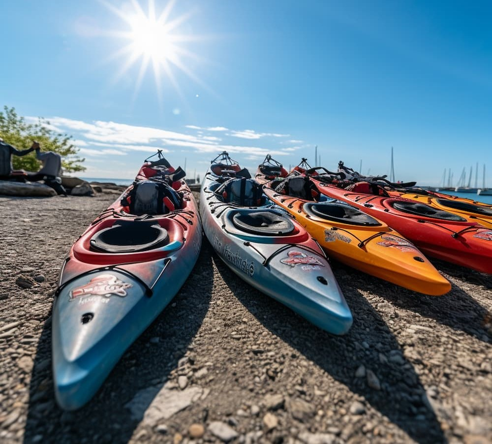

History
Rush River.Co was born in 2012 from a group of friends' shared passion for the wild currents of the Acequias River.
What started as weekend expeditions quickly transformed into a professional mission: to show the world the hidden
natural wonders of Barinas. Over the last decade, we have explored every canyon and rapid, perfecting our routes
to offer a unique blend of safety and raw adventure.

Today, we are recognized as leaders in eco-tourism in western Venezuela. We don't just navigate rivers; we protect
them. By partnering with local communities, we ensure that every splash contributes to the preservation of our
tropical ecosystems. Our history is written with every paddle stroke, and we invite you to become part of our
next big chapter in the water